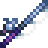

來自一條鹹魚和他的朋友紀錄
主要伺服器農場主 ，在第四年秋16號跟他訂婚 ，在第四年秋16號跟他訂婚 |
|
|
|
礦坑愛好者
 ，在第二年春10號，跟他結婚 ，在第二年春10號，跟他結婚 |
|
礦坑愛好者之一
 ，在第六年春17號，跟她結婚 ，在第六年春17號，跟她結婚 | |
 |
改造房屋愛好者(琳)
 ，在第四年春13號，跟她結婚 ，在第四年春13號，跟她結婚 |
|
釣魚愛好者(伊恩) 
 ，在第四年秋5號，跟她結婚 ，在第四年秋5號，跟她結婚 | |
|
釣魚愛好者(鴉)
 ，在第5年夏17號，跟他結婚 ，在第5年夏17號，跟他結婚 |